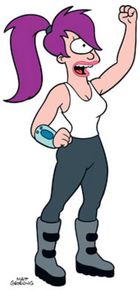

Тура́нґа Лі́ла (частіше просто Ліла) — основний жіночий персонаж мультиплікаційного серіалу «Футурама». Це рішуча, струнка, приваблива дівчина-циклоп, капітан і пілот космічного корабля кур'єрської фірми «Міжпланетний експрес». Вона — об'єкт постійних любовних прагнень головного героя серіалу — Фрая. На руці весь час носить пов'язку зі вбудованим мікрокомп'ютером.
